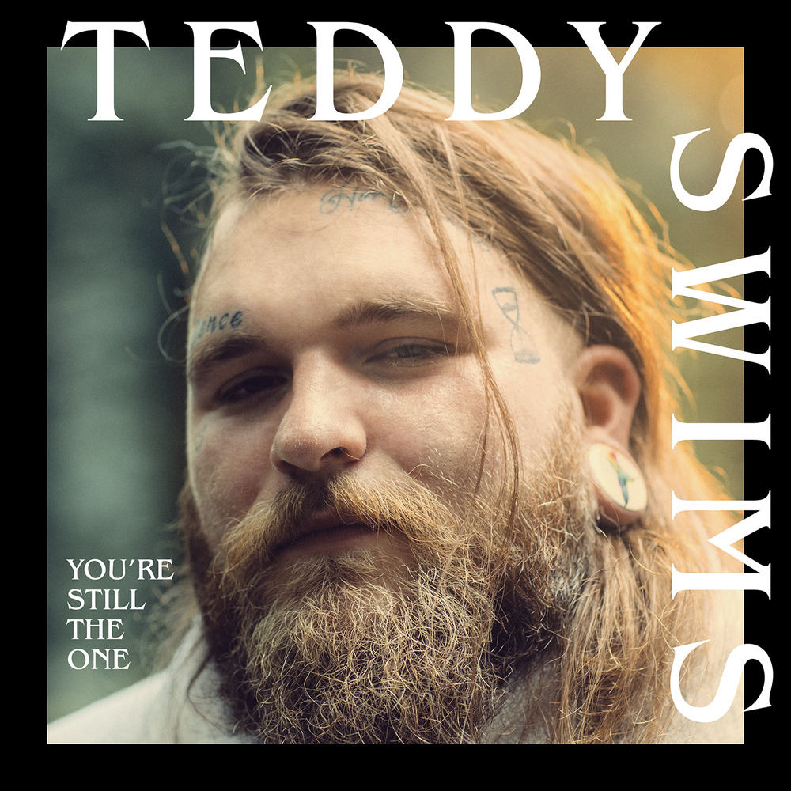

Through The Years
"Through The Years," written by Kenny Rogers in 1981, is one of the most famous anthems of marital faithfulness. It is about a lifetime companion who has been his steady support. It is the fourth single from the album Share Your Love, written by Steve Dorff and Marty Panzer. This song makes me strong and feels so loved.
Sk8er Boi
Avril Lavigne's "Sk8er Boi" is punk rock, pop-punk, alt-pop, skate punk, and power pop songs. This song is one of my favorites since the beat is so lit, not to mention the message. This is, without a doubt, one of Lavigne's finest songs.
I Wanna Be Free

"I Wanna Be Free" is the 14th track from Vices and Virtues of Panic! At the Disco and is only available on the album's deluxe version. The chorus is what I like best about this song. When I hear this song, I always sing my heart out. "I wanna be free, I wanna be loved. I wanna be more than you're thinking of."
When I Dream About You
“When I Dream About You” was originally by Stevie B, but Gracenote's (A band from the Philippines) rock rendition, in particular, appeals to me more because that is my preferred genre. It's so upbeat and cool that even Stevie B. was amazed.
The Only Exception
"The Only Exception" by Paramore is Indie/Acoustic music. This soulful and heartfelt love song is about a girl who is afraid of falling in love and has promised herself not to fall in love. She met someone who may be an exception to what she had promised. This is one of Paramore's most famous songs.
Still into You
"Still Into You" is power pop, pop-rock, and alternative rock song again by Paramore. Many music critics appreciated the song, calling it "catchy," and "powerful," naming it one of the songs of the summer of 2013. Every time I hear the intro to this song, I instantly start jumping, headbanging, and vibing to the music. This is just so lit and perfect for me.
Bohemian Rhapsody
"Bohemian Rhapsody" is a tribute of Queen, and the legendary Freddie Mercury. This song is about Freddie's realization of how different and happy his life be, if he had simply been able to be himself. This song was hailed across the world as a work of genius, displaying a mastery of musical forms. Personally, this song has a special part in my heart.
James Dean & Audrey Hepburn
“If I’m James Dean, You’re Audrey Hepburn” is a song by my favorite band, Sleeping with Sirens. This song is maybe the closest any singer has come to capture the feelings of young love in music. It's one of my favorite songs because of the lovely songwriting and excellent melody.
You're Still the One

"You're Still the One" is a country song first performed by Shania Twain, but Teddy Swims' rendition is my favorite. This song is about lovers who continually fight for their relationship despite all odds. Every time this song is played, I am reminded of someone. It tells me to stay strong and never give up.
All Too Well
Who doesn't know the one and only Taylor Swift? Taylor launched "All Too Well" as country-pop music in 2012, and it was re-issued with a 10-minute version in 2021. With its unique word plays and catchy melody, this is indeed one of Taylor's greatest hits. I played this song every day straight in two weeks, last year!